Clique nos nomes das cidades de Malta

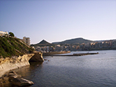Marsalforn é uma vila na costa norte de Gozo, a segunda maior ilha do arquipélogo de Malta. A vila fica entre as cidades do topo da montanha, Xaghra e Żebbuġ. A vila faz parte da localidade de Żebbuġ. Marsalforn é a estância turística mais popular de Gozo. Há apenas uma pequena praia de areia em Marsalforn, no entanto, ao longo da costa rochosa há uma série de locais interessantes para o banho de mar.
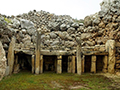Xagħra é um povoado da ilha de Gozo em Malta. Xagħra tem uma área de 250 ha e uma população de 4.886 pessoas (2014). Foi, provavelmente, a primeira localidade da ilha de Gozo (Malta) a ser habitada, e construída sobre terreno elevado. Tem uma rica herança histórica rodeada pelas baías de Ramla (considerada a melhor praia de Malta), Għajn Barrani e Marsalforn. Em Xagħra perduram dois templos de pedra do Neolítico de Ġgantija, declarados património mundial; datam de 3600 antes de Cristo, o que os situa entre os edifícios de pedra independentes mais antigos do mundo.
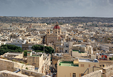Victoria, também conheci-
Xlendi é uma vila de Malta situada no sudoeste da ilha de Gozo. Esta vila tem uma bela topografia com penhascos bastante íngremes ao lado e um vale na parte de trás que leva água da chuva das aldeias que a cercam para a baía.
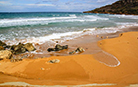Gozo é uma ilha no Mar Mediterrâneo, parte da República de Malta, e a segunda maior ilha em extensão territorial do arquipélago que forma o país. Tem área de 67 km² e população de 37.342 em março de 2014. Sua principal cidade é Rabat, também chamada Victoria. É uma diocese católica independente. A ilha tornou-se despovoada em 1551 quando toda a população de aproximadamente 6.000 habitantes foi escravizada por soldados otomanos e piratas muçulmanos.
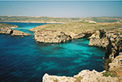Comino (Kemmuna em maltês) é uma das Ilhas Maltesas localizada entre as ilhas de Malta e Gozo no Mar Mediterrâneo. Pertence à República de Malta.
Medindo apenas 2 km² em área, possui uma população permanente de apenas 4 habitantes. Um hotel com uma praia privada foi construído em Comino com o objetivo de atrair turistas em busca de tranquilidade e isolação que o lugar oferece.
Comino é o lar da Lagoa Azul que muitos turistas visitam todos os anos graças ao grande número de pacotes turísticos de barcos operados em Malta e Gozo.
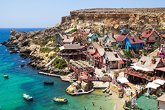Mellieħa é uma cidade pequena na região norte de Malta. Tem uma população de 10.087. Mellieħa é também um resort turístico, popular por suas praias de areia e ambiente natural.
A grande península de Marfa fica ao norte de Mellieħa. A Marfa Ridge atravessa uma grande parte da península.
No sul da Marfa Ridge, há Anchor Bay e a Popeye Village.
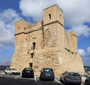St. Paul's Bay é uma cidade na Região Norte de Malta. Ela está situada a dezesseis quilômetros a noroeste da capital Valletta. Saint Paul's Bay é a maior cidade da Região Norte e é a sede do Comitê Regional do Norte.
Seu nome refere-se ao naufrágio de São Paulo, como documentado nos Atos dos Apóstolos, devido à tradição de que São Paulo naufragou nas ilhas de São Paulo, que estão situadas perto de St. Paul's Bay. Segundo a Bíblia, São Paulo naufragou em uma ilha que muitos estudiosos identificaram como Malta em sua viagem de Caesarea para Roma. O povo maltês acredita que foi São Paulo que lançou as bases do cristianismo na ilha.
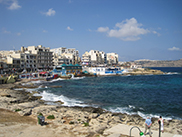Buġibba é uma zona situada dentro da baía de St. Paul na região norte de Malta. Ela está situada ao lado de Qawra, e é um popular resort turístico, contendo inúmeros hotéis, restaurantes, pubs, clubes e um cassino.
Durante a fase Tarxien da pré-história maltesa, um pequeno templo foi construído no que é agora Buġibba. O templo foi escavado entre os anos 1920 e 1950, e agora está localizado no terreno de um hotel.
Qawra é uma zona da baía de St. Paul na região norte de Malta. Ela está localizada perto de Buġibba e Salina, e é uma popular estância turística, contendo muitos hotéis e restaurantes. A cidade é o lar de muitas atividades de esportes aquáticos, incluindo banana boat, passeios de jetski, caiaque e mergulho. As temperaturas do verão podem chegar até 40 ° C , com uma média de mais de 30 ° C. Cassinos, bares e clubes são também uma parte importante desta pequena cidade.
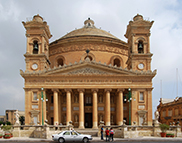
Mosta é uma cidade da região norte de Malta, ao noroeste de Valletta. Em 2014, tinha uma população estimada de 20.241. Em 15 de agosto é celebrada em Mosta a festa da Assunção, popular entre os moradores e turistas. Mosta possui a terceira maior cúpula do mundo dedicada à Assunção. Em 9 de abril de 1942, a igreja foi quase destruída durante a Segunda Guerra Mundial. Uma bomba do Eixo atingiu a cúpula da igreja, mas não conseguiu explodir. O detonador foi removido e uma réplica da bomba é agora exibida como um memorial.
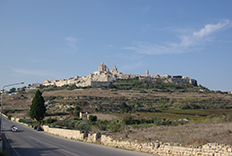
Mdina é uma cidade amuralhada situada no oeste de Malta. Anteriormente era chamada Citta Vecchia e foi a capital do país até que a substituíram por Valeta, em 1570. Possui uma área de 2.500 m², com uma população de 258 habitantes (2005). Tem belos palácios e edifícios religiosos que datam do século XV, alguns ocupados atualmente por famílias aristocratas.
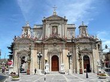
Rabat é uma cidade na região norte de Malta, com uma população de 11.497 (2014). O nome da cidade é derivado da palavra árabe para 'subúrbio': الرباط, como era o subúrbio da antiga capital Mdina. Metade do núcleo atual da aldeia também fazia parte da cidade romana de Melite, antes que este fosse redimensionado durante a ocupação Fatimid. A Nunciatura Apostólica da Santa Sé para a República de Malta está localizada nesta aldeia. Partes dos filmes de Munique e Black Eagle foram filmadas em Rabat.
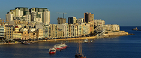Sliema é uma cidade situada na costa nordeste de Malta, no distrito portuário do norte. É uma importante área residencial e comercial com shoppping, restaurantes e cafeterias. Beirando o litoral há um calçadão famoso conhecido como Sliema Front, que se tornou o local ideal para correr e caminhar. É também utilizado como ponto de encontro para os moradores locais durante a temporada de verão. Sliema também é conhecida por suas inúmeras praias rochosas, esportes aquáticos e hotéis.
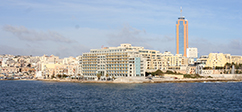St. Julian's (em maltês, San Ġiljan) é uma cidade de Malta, localizada na ilha homônima, ao norte da capital do país, Valleta. Com uma área de apenas 1,6 km², possui uma população de 10.232 habitantes. Um de seus atrativos é a presença de restaurantes, clubes noturnos e discotecas, que permanecem em atividade durante a madrugada, além da rede hoteleira, todos concentrados na região de Paċeville.
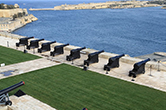Valletta é a capital da República de Malta. Tem uma população de cerca de 6.315 habitantes (censo de 2005) e situa-se na costa leste da ilha de Malta. Valletta se encontra na península de Malta, dispondo de dois portos naturais: Marsamxett e Grand Harbour. O nome oficial da cidade foi dado pela Ordem de São João e é Humilissima Civitas Valletta — A Humílima Cidade de Valletta. Contudo, com a construção dos bastiões, muralhas e revelins, ao mesmo tempo que a cidade se desenvolvia com inúmeros edifícios barrocos, a cidade passou a ser comumente conhecida em maltês como Il-Belt - A Cidade.
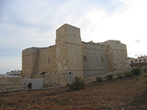Marsaskala, é uma vila localizada na região sudeste de Malta que cresceu em torno do pequeno porto na ponta da baía de Marsaskala.
A igreja paroquial local é dedicada a Santa Ana (St. Anne) e a festa de St. Anne é comemorada no final de julho em Marsaskala. A cidade tem uma população no inverno de 12.134 pessoas (a partir de março de 2014), mas incha para cerca de 20.000 no verão.
A Saint Thomas Tower foi construída em 1614, depois do ataque turco, para reduzir a vulnerabilidade de Marsaskala.
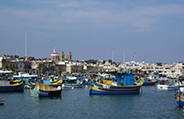Marsaxlokk é uma tradicional vila de pescadores na região sudeste de Malta, com uma população de 3.534 em março de 2014. O nome da vila vem de marsa, que significa o "porto" e xlokk, que é o nome local para sudeste. A palavra está relacionada com o nome do vento quente e seco que sopra do Sahara, comparável a palavra catalã equivalente, "xaloc". A vila é conhecida pela feira Marsaxlokk, uma grande feira de domingo que se estende por toda a vila e a feira turística que funciona todos os dias durante a semana. Os habitantes da vila são chamados de Xlukkajr.
Malta, oficialmente República de Malta, é um país desenvolvido no sul do continente europeu cujo território ocupa as Ilhas Maltesas, um arquipélago situado no Mar Mediterrâneo, 93 km ao sul da ilha da Sicília (Itália) e 288 km a nordeste da Tunísia (África), 1826 km a leste de Gibraltar e 1510 quilômetros a oeste de Alexandria.
Malta abrange uma área terrestre de 316 km², tornando-se um dos menores países da Europa, possuindo também a maior densidade demográfica do continente. Sua capital é Valletta e a maior cidade é Birkirkara. O Maltês é a língua nacional e o inglês é a língua cooficial.